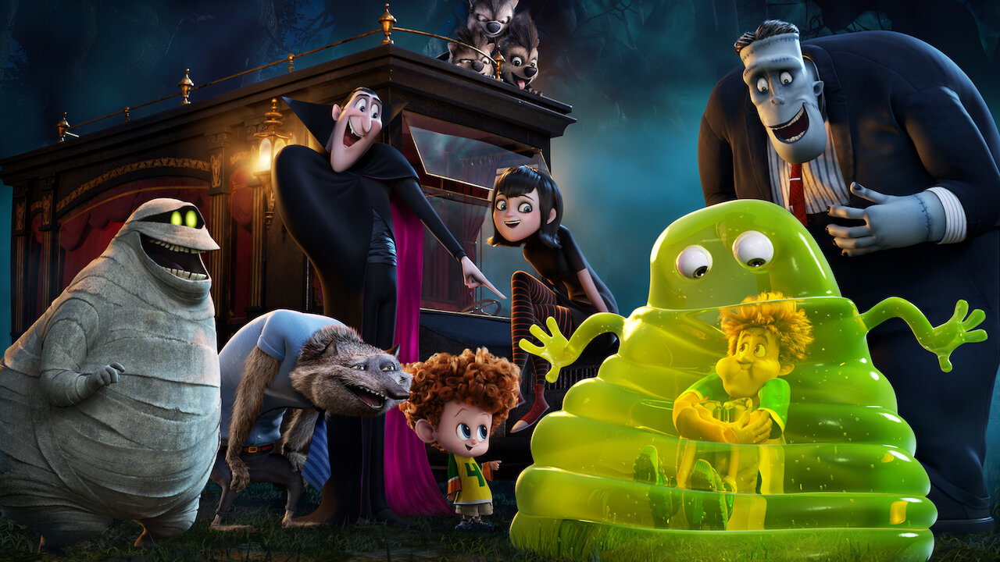

About Count Dracula
Count Dracula is amazing. He is a vampire who owns a gigantic castle in Transylvania, who is a hotel as well. All monsters are welcome.
Count Dracula with daughter and friends
Count Dracula's Charachteristics
- He is a bat
- He is terrified of the villagers
- He is a nice guy deep deep deep down
Dracula's buddies
The count has amazing taste in friends. They all like to hang out at his hotel and go on holidays together. They are also afraid of the villagers. Click on the links below to read more about them.